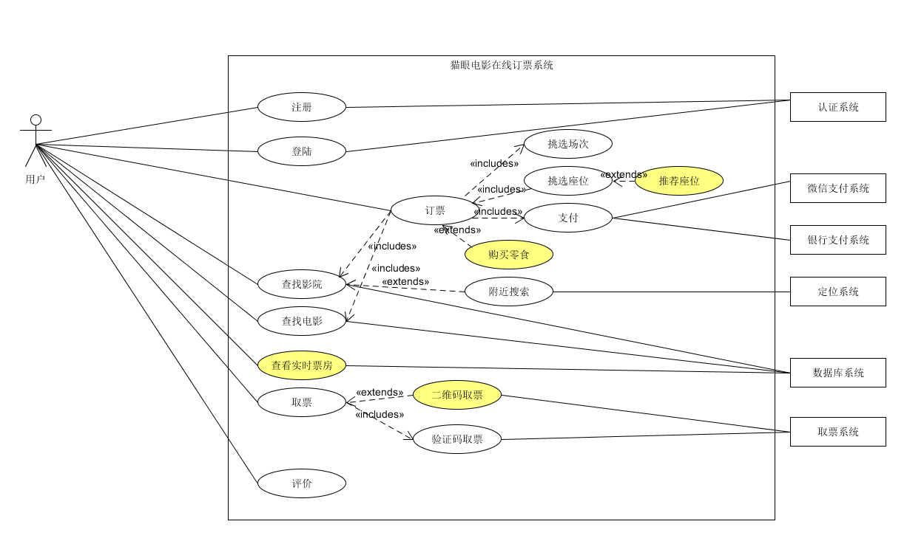
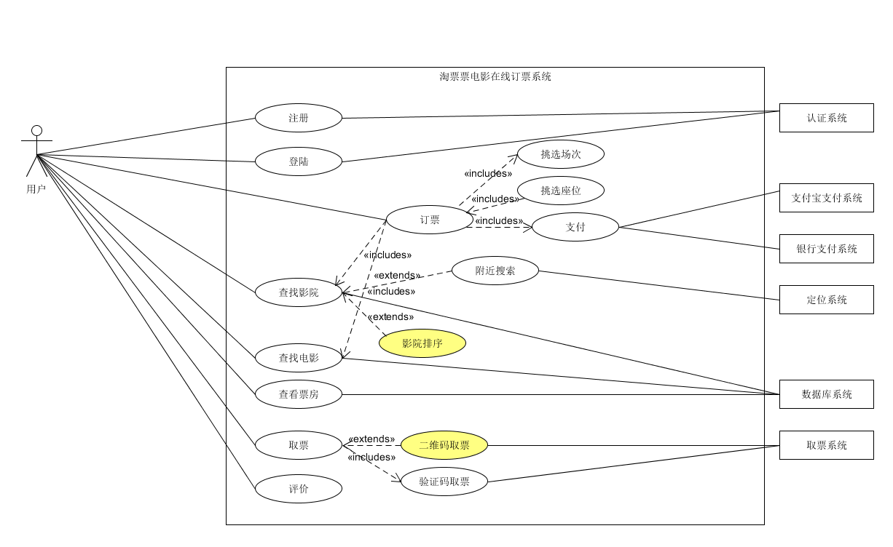
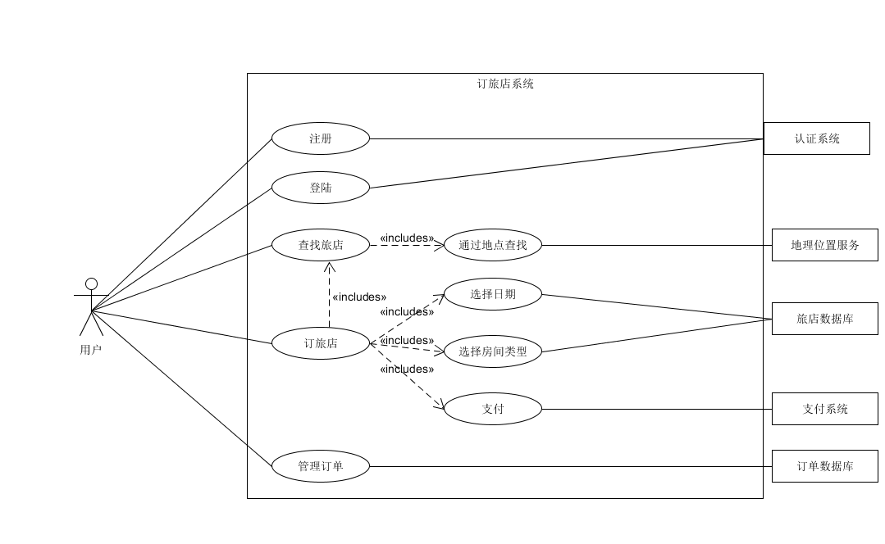

Homework 6
1. 简答题
- 用例的概念
- 用例是描述参与者使用一个系统去达成某个目标的相关的成功和失败场景的集合.
- 是文本而不是图.
- 用例建模主要是去写文本, 而不是画图.
- 用例不是面向对象的.
- 用例是经典OOA/D的关键需求输入.
- 功能性或行为性需求表明系统要做什么. 根据FURPS+需求类型, 强调”F”, 但也可以用于其他类型.
- 用例和场景的关系? 什么是主场景或happy path?
- 一个用例代表一组场景的集合, 包含主场景加上若干个替代场景.
- 主场景对应主要的系统交互, 一般是成功场景.
- 替代场景对应较少出现的交互和异常.
- 用例有哪些形式?
- Brief(high level)
- 一段总结, 一般是主要的成功场景
- 在早期的需求分析期间, 为了快速认识主题和范围. 这只需几分钟来创建.
- Casual(简便格式)
- 非正式的段里格式. 多个段落覆盖多方面的场景.
- Fully
- 详细编写所有步骤和变化和他们支持的部分, 如前提和成功保证.
- Brief(high level)
对于复杂业务, 为什么编制完整的用例非常难?
- 复杂的业务场景多, 变化多. 很难将所有的步骤和变化都详细编写.
什么是用例图?
用例图是指由参与者（Actor）、用例（Use Case），边界以及它们之间的关系构成的用于描述系统功能的视图。用例图（User Case）是外部用户（被称为参与者）所能观察到的系统功能的模型图。
用例图是系统的蓝图。用例图呈现了一些参与者，一些用例，以及它们之间的关系，主要用于对系统、子系统或类的功能行为进行建模
用例图的基本符号与元素?
- 参与者, 用例, 关联关系, 包含关系, 扩展关系, 泛化关系.
用例图的画法与步骤
- 绘制系统边界
- 绘制参与者
- 绘制用例
- 确定用例间关系
用例图给利益相关人与开发者的价值有哪些?
- 尽管用例本身会涉及大量细节和各种可能性，用例图却能提纲挈领地让人了解系统概况。
- 由于其简单纯粹的本质，用例图是项目参与者间交流的好工具。
2. 建模练习题
- 选择2-3个你熟悉的类似业务的在线服务系统（或移动 APP），如定旅馆（携程、去哪儿等）、定电影票、背单词APP等，分别绘制它们用例图。并满足以下要求：
- 请使用用户的视角，描述用户目标或系统提供的服务
- 粒度达到子用例级别，并用 include 和 exclude 关联它们
- 请用色彩标注出你认为创新（区别于竞争对手的）用例或子用例
- 尽可能识别外部系统和服务


- 然后，回答下列问题：
- 为什么相似系统的用例图是相似的？
- 因为相似的系统的使用场景是相似的, 面对的用户和用例也是相似的. 比如订电影票, 主场景就是订购电影票. 不同的主要是额外的功能, 即对主场景的扩展.
- 如果是定旅馆业务，请对比 Asg_RH 用例图，简述如何利用不同时代、不同地区产品的用例图，展现、突出创新业务和技术
- 不同时代, 不同地区的用户对产品的需求是不同的, 但是主要功能大体是不会变化的. 对于定旅馆业务, 主场景就是定旅馆, 而可实现的创新业务和技术可以是用地图查找旅店等的扩展.
- 如何利用用例图定位创新思路（业务创新、或技术创新、或商业模式创新）在系统中的作用
- 通过判断创新的关系来确定作用, 在父级用例的创新一般作用比较大, 随后的是子用例, 再是扩展用例, 而且对主场景上的创新也是作用比较大的.
- 请使用 SCRUM 方法，选择一个用例图，编制某定旅馆开发的需求（backlog）开发计划表

| ID | Name | Imp | Est | How to demo | Note |
|---|---|---|---|---|---|
| 1 | 注册 | 5 | 2 | 填写用户名, 电话和密码注册 | |
| 2 | 登陆 | 5 | 2 | 输入正确的用户名,密码登陆 | |
| 3 | 查询旅店 | 8 | 3 | 通过地点, 名称, 价格查询旅店 | |
| 4 | 订旅店 | 10 | 8 | 查找选择旅店, 选择日期, 选择房间类型, 然后支付. | |
| 5 | 管理订单 | 8 | 7 | 修改或取消订单 |
- 根据任务4，参考 使用用例点估算软件成本，给出项目用例点的估算
| 用例 | # 事务 | # 计算 | 原因 | UC权重 |
|---|---|---|---|---|
| 1注册 | 2 | 1 | 简单 | |
| 2登陆 | 2 | 1 | 简单 | |
| 3查询旅店 | 4 | 1 | 框架 | 简单 |
| 4订旅店 | 7 | 3 | 框架 | 一般 |
| 5管理订单 | 5 | 2 | 简单 |